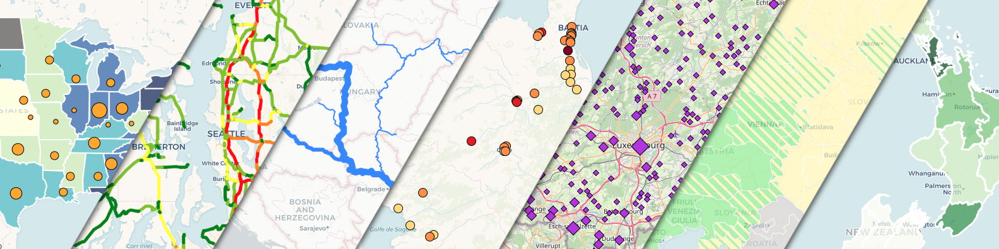

<!doctype html>

<html>
	<head>
		<meta charset="utf-8">
		<title>Leaflet-dataclassification plugin demo page: "lines_color"</title>
		<link rel="stylesheet" href="https://fonts.googleapis.com/css?family=Open+Sans">

		<!-- leaflet v2 from CDN with an import map -->	
		<link rel="stylesheet" href="https://unpkg.com/leaflet@2.0.0-beta.5/dist/leaflet.css" />
		<script type="importmap">
			{
				"imports": {
					"leaflet": "https://cdn.jsdelivr.net/npm/leaflet@2.0.0-beta.5/dist/leaflet.js"
				}
			}
		</script>

		<!-- leaflet-dataclassification plugin (CSS) -->	
		<link rel="stylesheet" href="../dist/leaflet-dataclassification.css" />	
		
		<style>
			html, body {
				height: 100%;
				margin: 0;
				font-family: 'Open Sans', 'OpenSans-Local';
				font-style: normal;	
			}
			
			#map {
				position: absolute;
				margin:  auto;
				top: 0;
				bottom: 0;
				left: 0;
				right: 0;
			}

			/* Overriding Chrome's built-in CSS rules to avoid focus rectangle on clicking polygons on a Leaflet map */
			path.leaflet-interactive:focus {
				outline: none;
			}
		</style>
	</head>
	<body>		
		<div id="map"></div>
		<script type="module">
			// imports for Leaflet
			import {LeafletMap, TileLayer, LayersControl, Control, DomUtil} from 'leaflet';
			import {version as Lversion} from 'leaflet';
			// import the plugin
			import {DataClassification} from '../dist/leaflet-dataclassification.js';

			// carto API key - restricted to domain
			var cartoKey = 'cb1_3fpi_1_9bb9b282ea7b7476f058db9a';
			
			// base maps
			var OSM = new TileLayer('https://{s}.tile.openstreetmap.org/{z}/{x}/{y}.png', {
				attribution: '&copy; <a href="https://www.openstreetmap.org/copyright" target="_blank">OpenStreetMap</a> contributors'
			});
			var carto_attrib = '&copy; <a href="http://www.openstreetmap.org/copyright">OpenStreetMap</a>, &copy; <a href="https://carto.com/attributions">CARTO</a>'
			var cartodb_dark = new TileLayer('https://{s}.basemaps.cartocdn.com/dark_all/{z}/{x}/{y}' + (devicePixelRatio > 1 ? '@2x.png' : '.png') + `?key=${cartoKey}`, {
				attribution: carto_attrib,
				subdomains: 'abcd',
				maxZoom: 20,
				minZoom: 0
			});
			var cartodb_voyager = new TileLayer('https://{s}.basemaps.cartocdn.com/rastertiles/voyager/{z}/{x}/{y}' + (devicePixelRatio > 1 ? '@2x.png' : '.png') + `?key=${cartoKey}`, {
				attribution: carto_attrib,
				subdomains: 'abcd',
				maxZoom: 20,
				minZoom: 0
			});
			var cartodb_positron = new TileLayer('https://{s}.basemaps.cartocdn.com/light_all/{z}/{x}/{y}' + (devicePixelRatio > 1 ? '@2x.png' : '.png') + `?key=${cartoKey}`, {
				attribution: carto_attrib,
				subdomains: 'abcd',
				maxZoom: 20,
				minZoom: 0
			});
			var baseMaps = {
				"OpenStreetMap": OSM,
				"CARTO Dark": cartodb_dark,
				"CARTO Voyager": cartodb_voyager,
				"CARTO Positron": cartodb_positron
			};
			// map div object, main Leaflet object:
			var map = new LeafletMap('map', {layers: [cartodb_voyager]}); 
			map.attributionControl.setPrefix('<a href="https://leafletjs.com" title="A JavaScript library for interactive maps">Leaflet ' + Lversion + '</a>');
			var layerControl = new LayersControl(baseMaps, null, {collapsed: false}).addTo(map);

			// Line features example. Attribute to test with: 'AADT'
			fetch('data/lines_c_wsdot_aadt.geojson').then(r => r.json()).then(d => {
				function tooltip(feature, layer) {
					if (feature.properties.AADT) {
						layer.bindTooltip(String(feature.properties.AADT));
					}
				}
				window.testdata = new DataClassification(d, {
					mode: 'jenks',
					classes: 5,
					field: 'AADT',
					lineMode: 'color',
					colorCustom: ['green', 'yellow', 'red'],
					legendTitle: 'Annual average<br>daily traffic (2022)',
					attribution: 'Traffic data: <a href="https://gisdata-wsdot.opendata.arcgis.com/datasets/WSDOT::wsdot-traffic-sections-aadt-current/about" target="_blank">Washington State Department of Transportation (2022)</a>',
					onEachFeature: tooltip,
					style: {weight: 5}
				}).addTo(map);
				map.fitBounds(testdata.getBounds());
			});

			var infopanel = new Control({position: 'bottomright'});
			infopanel.onAdd = function (map) {
				var div = DomUtil.create('div', 'info');
				div.innerHTML = `
					<div style="display: flex; flex-direction: column; max-width: 535px; text-align: center; row-gap: 8px">
						<div style="font-weight: bold;">
							Leaflet-dataclassification plugin demo page: "lines_color"
						</div>
						<div style="text-align: justify">
							This is an example page showcasing some of the features of Leaflet plugin <i>leaflet-dataclassification</i>.
							Feature tooltips on hover (native feature of Leaflet) were added to provide an easy check of attribute values used.
							<br><br>
						</div>
						<div>
							Single-step data classification, symbology and legend creation for GeoJSON data powered thematic maps.
							<br><br>
							Demos: <a href="./combined.html">combined</a>, <a href="./points_c.html">points_c</a>, <a href="./points_s.html">points_s</a>, <a href="./lines_w.html">lines_w</a>, <a href="./polygons_c.html">polygons_c</a>, <a href="./polygons_c2.html">polygons_c2</a>, <a href="./polygons_h.html">polygons_h</a>
							<br><br>
							Project page: <b><a href="https://github.com/balladaniel/leaflet-dataclassification">https://github.com/balladaniel/leaflet-dataclassification</a></b>
						</div>
							<a href="https://github.com/balladaniel/leaflet-dataclassification"></img></a>
					</div>
				`;
				return div;
			}
			infopanel.addTo(map);

		</script>	
	</body>
</html>